Shark Machine Learning Library

Reference for the Regression and Classification Models Toolbox.
ReClaM offers a rich set of methods for supervised learning, reaching from basic to state of the art tools. For example, the library provides simple linear models as well as different flavors of neural network and support vector machine models and training algorithms. Sophisticated model selection tools complete the collection.
This introduction is organized as follows:
NOTE: In the transition from Shark version 1.4.x to 1.5.x there was a major change of the ReClaM architecture. For details on design goals and technical considerations refer to the following documents:
To achieve most flexibility, the ReClaM package is build like a construction kit. The main components are:
These components are modeled by the three ReClaM base classes

The organization of the ReClaM base classes with an illustration of the information flow.
To give a motivation and a context for the following introduction, we will very briefly outline the general structure of a typical supervised learning scenario, that is, data driven model adaptation, within the ReClaM architecture:
An instance of a problem specific Model subclass, an ErrorFunction and a suitable Optimizer object are constructed. The training data, that is, input patterns with labels, are loaded into the system. Model and optimizer are initialized. The optimization takes the form of a loop calling the optimizer. In each iteration the optimizer modifies the model parameters in order to achieve a smaller error function value than before. The error computation usually involves the model prediction on the data and the labels. This proceeding is illustrated by the following code sniplet:
The base class interfaces provide all functionality that is needed for this general scheme. Therefore, the core of all ReClaM programs looks quite similar. Now, most of the ReClaM classes are specialized subclasses implementing models, error functions or optimizers. This document will first introduce the base class interfaces and then turn to the most prominent model types.
The Model class provides an interface for an adaptable data processing model. A typical model can be thought of as a parameterized family of functions or maps. The interface provides the following functionality:
A model needs input patterns to perform its computations. See the Model documentation for a complete list of models.
The ErrorFunction class is a quite simple interface providing only the following functions:
An error function needs a model, input patterns and label information to perform its computations. See the ErrorFunction documentation for a complete list of error functions.
The Optimizer class unifies standard initialization and iterative optimization steps of all ReClaM optimizers. It provides the following interface:
An optimizer needs a model, an error function as well as input patterns with labels to perform its computations. These computations result in a data driven adaptation of the model parameters in order to reduce the error evaluated on the training data. See the Optimizer documentation for a complete list of optimizers.
ReClaM offers five simple linear models for learning in vector spaces:
The following standard learning methods operating on these models are available as optimizers:
These optimizers deviate from the standard ReClaM philosophy because they solve the underlying problems analytically, that is, without the need for an iterative update loop. In most cases, these algorithms can serve for preprocessing or as base line methods.
ReClaM comes with several predefined network types. These networks cover a wide variety of applications. Whenever these prototypes prove inappropriate they can hopefully serve as base classes or starting points for refined implementations. The following table lists several properties:
| Name | Type | Activation Functions | Training Error Measure | |
|---|---|---|---|---|
| Hidden Neurons | Output Neurons | |||
| FFNet | Feed Forward | 
|
| none |
| MSEFFNet | Feed Forward |
|
| Mean Squared Error |
| LinOutFFNet | Feed Forward |
| 
| none |
| LinOutMSEBFFNet | Feed Forward |
|
| Mean Squared Error |
| TanhNet | Feed Forward | 
|
| Squared Error |
| LinearOutputTanhNet | Feed Forward |
|
| Squared Error |
| ProbenNet | Feed Forward | 
|
| Mean Squared Error |
| ProbenBNet | Feed Forward |
|
| Mean Squared Error |
| MSERNNet | Recurrent |
|
| Mean Squared Error |
| RBFNet | Radial Basis Function | special | special | none |
| MSERBFNet | Radial Basis Function | special | special | Mean Squared Error |
The methods in the file createConnectionMatrix.h automatically create connection matrices for feed-forward and recurrent networks with several layers.
Flags are offered that can be set to establish standard connections between the neurons of the network.
The EarlyStopping class provides measures that can be used to fight overfitting during the training process.
By means of the VarianceEstimator class it is possible to enhance the learning speed of your network by allowing it to add a new pattern to the training set at each step. This pattern is chosen in a way that it will minimize the network error.
ReClaM offers a variety of kernel based learning algorithms. In the following the basic concepts and the corresponding classes are introduced.

Kernel based learning algorithms rely on a positive definite kernel function taking two input patterns as arguments. The kernel function can be interpreted as first mapping the inputs into a (usually high dimensional) Hilbert space and then computing the inner product in this space. A kernel based algorithm is a learning algorithm that can be formulated in terms of inner products of pairs of input patterns. These inner products are then computed using a kernel function.
The KernelFunction interface encapsulates this functionality. Usually a parameterized family of kernel functions is considered. Because we are interested in the optimization of its parameters, KernelFunction is derived from Model. A kernel does not provide an output given an input. Therefore it defines a new interface:
Of course the KernelFunction inherits the Model members for retrieving and setting parameters and checking the feasibility of the parameters.
Several standard kernel functions are available, together with combinations of kernels to new kernels:
| Class | Parameters | Formula | Description |
|---|---|---|---|
| LinearKernel | none | 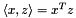 | The linear kernel is the canonical inner product. |
| PolynomialKernel | degree d and offset v | 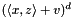 | The polynomial kernel is a polynomial of the linear kernel. This representation corresponds to a feature space of monomials of the input coordinates. |
| RBFKernel | concentration  | 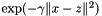 | The Gaussian Radial Basis Function kernel is one of the most widely used kernels for vector valued data. It is known to be universal. |
| DiagGaussKernel | diagonal inverse covariance matrix M | 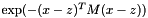 | Gaussian kernel with adaptible covariance matrix. The extent of the Gaussian along each coordinate axis can be controlled. |
| GeneralGaussKernel | inverse covariance matrix M | Gaussian kernel with adaptible covariance matrix. The complete shape of the Gaussian can be controlled. | |
| NormalizedKernel | parameters of a base kernel k | 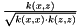 | The normalization of a positive definite kernel is again a valid positive definite kernel. The normalization ensures that the norm of each example in feature space is 1. |
| WeightedSumKernel | non-negative weights wi and parameters of base kernels ki | 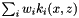 | The non-negative linear combination of positive definite kernels is a valid positive definite kernel again. |
The most simple kernel based algorithms available are
Their standard vector space versions can be obtained by simply using the linear kernel. These algorithms can serve as a baseline for the evaluation of more advanced methods. A special aspect of these algorithms is that they do not have any hyperparameters and do not need any special optimization. That is, once the training data are provided the models can be used immediately.
Support Vector Machines (SVMs) are the most prominent kernel based learning algorithms. The basic ideas of support vector machines are as follows:
Support vector machines usually result in a sparse affine sum of the form
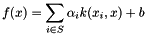
where the support vector index set S is a subset of the training data indices. In the case of classification with more than two classes the expansion becomes
where c sums over the classes and 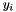 are class prototype vectors.
In ReClaM, a support vector machine is a Model holding the coefficients 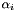 and  . Its prediction can be restricted to the sign of the computed value, which is the standard form for binary classification problems. For multi-class problems, the output vector can analogously be transformed into an integer class label. In contrast to other ReClaM models, support vector machines output only one value per input pattern. They can be viewed as affine linear functions mapping from the span of the support vectors in feature space to the real line (or to ).
. Its prediction can be restricted to the sign of the computed value, which is the standard form for binary classification problems. For multi-class problems, the output vector can analogously be transformed into an integer class label. In contrast to other ReClaM models, support vector machines output only one value per input pattern. They can be viewed as affine linear functions mapping from the span of the support vectors in feature space to the real line (or to ).
Training an SVM involves several so called hyperparameters. These are encapsulated by the MetaSVM class and its descendants:
| Class | Parameters | Problem Type | Description |
|---|---|---|---|
| C_SVM | regularization parameter C | binary classification | C-SVM formulation using either 1-norm or 2-norm slack penalty. This is the most usual way to train a support vector machine. |
| Epsilon_SVM | regularization parameter C, accuracy parameter  | regression | Standard SVM for regression |
| RegularizationNetwork | regularization parameter | regression | regularized linear regression in feature space |
| GaussianProcess | none | regression | Bayesian inference is used to estimate the regularization and kernel parameters. |
| OneClassSVM | regularization parameter  | support / density quantile estimation | Estimation of an area of high density |
| AllInOneMcSVM | regularization parameter C | multi-category classification | Covers the methods by Weston and Watkins and by Wahba (without bias) |
| CrammerSingerMcSVM | regularization parameter  | multi-category classification | Multi-Class SVM by Crammer and Singer (without bias) |
| OVAMcSVM | regularization parameter C | multi-category classification | A simple one-versus-all machine (without bias) |
| BinaryCostMcSVM | regularization parameter C | multi-category classification | Multi-class classification at the training cost of a binary machine (without bias) |
For the adaptation of the hyperparameters of the C_SVM or the Epsilon_SVM, please refer to the model selection section below.
SVMs are trained solving a special quadratic program. For this purpose ReClaM comes with a various efficient solvers for the particular types of optimization problems. The quadratic programming is hidden from the user of the library. An SVM is trained using the special SVM_Optimizer class. This class constructs a QuadraticProgram object, solves the corresponding problem and copies the solution into the SVM parameter vector. The optimization involves a special quadratic objective function. For efficiency reasons it is not desirable to define this objective function as an ErrorFunction derived class and use a standard purpose gradient based optimizer. Because of this special situation the SVM_Optimizer can be called without an error function parameter. When called with an error function through the standard Optimizer interface the error function is ignored.
The process of model selection is the choice of a model from a family of candidate models. This may correspond to the selection of the hyperparameters of a MetaSVM subclass. In this case the model family is parameterized by the MetaSVM parameter vector.
A model selection problem is usually solved by an outer optimization loop investigating a model family and an inner optimization loop finding the best model within this family. The fitness of a model family is simply the fitness of its best element.
In general, model selection can be carried out on complicated spaces like the possible topologies of a neural network. These problems require specialized evolutionary algorithms not provided by the ReClaM library. However, in the case of support vector machines the model selection problem can usually be reduced to real valued parameter adaptation, to which ReClaM is perfectly suited. Therefore most model selection support is available for this model type. Only the cross validation method is applicable to general model selection problems.
The model of a support vector machine is made up by the kernel function and the complexity control. The kernel parameters and the SVM training parameters are to be chosen. These parameters are captured by the MetaSVM class and its subclasses.
Several objective functions have been proposed for model selection for support vector machines. Besides the usual cross validation measures ReClaM provides the following ErrorFunction subclasses:
To give you a better idea, how using the several components of ReClaM to build your own networks, you can take a look at some commented source codes of example programs for different types of predefined networks. To run these programs please go to the examples directory of ReClaM.
Please have a look at our introductory tutorials on using multi-layer perceptron networks, part 1 and part 2.
The following table lists the most prominent ReClaM model types:
| Name | Inputs | Outputs | Description |
|---|---|---|---|
| LinearMap |  | 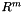 | Linear mapping 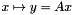. An affine version is available, too. |
| LinearFunction | | 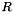 | Special case of a linear map with one output dimension. An affine version is available, too. |
| ComponentWiseModel | 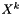 | 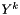 | Apply a base model   -fold and component wise, making up a model 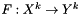. -fold and component wise, making up a model 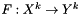. |
| ConcatenatedModel |  |  | Apply a chain 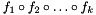 of models. The output space of model 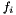 and the input space of model 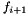 must match. |
| FFNet | | feed forward neural network | |
| RBFNet | | radial basis function network | |
| MSERNNet | | recurrent neural network with built-in mean squared error computation | |
| KernelFunction | 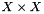 | Please refer to the Kernel Methods documentation. | |
| KernelMeanClassifier | | Simple mean classifier in a kernel defined feature space | |
| KernelNearestNeighbor | | 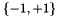 | Simple k-nearest-neighbor classifier in a kernel defined feature space |
| SVM | | or | Support Vector Machine model, that is, affine linear function in a kernel defined feature space. |
| MultiClassSVM | | 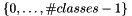 or | Support Vector Machine model, that is, affine linear function in a kernel defined feature space. |
| SvmApproximationModel | Used internally. Please refer to the SvmApproximation class for documentation. | ||
| MetaSVM | --- | --- | Base class of all SVM training schemes. See the MetaSVM documentation or the section Support Vector Machines for details. |
| SigmoidModel | R | (0, 1) | sigmoidal function 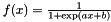 |
This table gives an overview over the error functions available:
| Class | Differentiable | Restrictions | Description |
|---|---|---|---|
| SquaredError | yes | none | squared error between model output and target |
| MeanSquaredError / DF_MeanSquaredError | yes | none | mean squared error between model output and target |
| CrossEntropy / DF_CrossEntropy | yes | unit interval model outputs | cross entropy measure for neural network classifier training |
| CrossEntropyIndependent / DF_CrossEntropyIndependent | yes | unit interval model outputs | cross entropy measure for neural network classifier training with non exclusive attributes |
| ClassificationError | no | Classifiers | fraction of misclassified patterns |
| BalancedClassificationError | no | Classifiers | mean fraction of misclassified patterns per class |
| ErrorPercentage | no | none | error percentage based on the mean squared error |
| RadiusMargin | yes | KernelFunction derived classes and C_SVM with 2-norm slack penalty | squared radius margin quotient for SVM model selection |
| NegativeKTA | yes | KernelFunction derived classes and C_SVM with 2-norm slack penalty | negative kernel target alignment |
| NegativeBKTA | yes | KernelFunction derived classes and C_SVM with 2-norm slack penalty | negative balanced kernel target alignment |
| NegativePolarization | yes | KernelFunction derived classes and C_SVM with 2-norm slack penalty | negative kernel polarization measure |
| SpanBound | no | SVM classifier | span bound for a support vector machine classifier model selection |
| LOO | no | SVM classifier | leave one out error especially tuned towards support vector machines |
| InverseClassSeparability | yes | KernelFunction derived classes | inverse of the class separability measure termed J, by Huilin Xiong and M. N. S. Swamy |
Among others, here come the most used optimizers:
| Class | Parameters | Gradient-Based? | Description |
|---|---|---|---|
| IRpropPlus | initial step sizes, increase and decrease factors, minimal and maximal step sizes | yes | Improved resilent backpropagation with weight backtracking. Other variants without improvement or backtracking are available. |
| CG | line search type and several tuning parameters with default values | yes | Conjugate Gradient method |
| BFGS | line search type and several tuning parameters with default values | yes | Broyden-Fletcher-Goldfarb-Shanno (BFGS) algorithm |
| CMAOptimizer | CMA type, initial standard deviations | no | Covariance Matrix Adaptation Evolution Strategy. This is a wrapper class for the EALib CMA implementation. The CMA is the first choice optimizer if the derivative is not available or lots of undesirable local minima are a concern. |
| GridSearch | grid definition | no | Grid search is the most basic optimization method available. Several variants add flexibility and/or improve efficiency. |
ReClaM offers a bunch of other models, error functions, and optimizers, as well as tools, e.g. for data handling, unified exception handling, and even more. Check out the class or file lists for a full overview.
For example, have a look at the tools defined in
Maybe the fastest way to get a grip on ReClaM is to have a look at the examples.